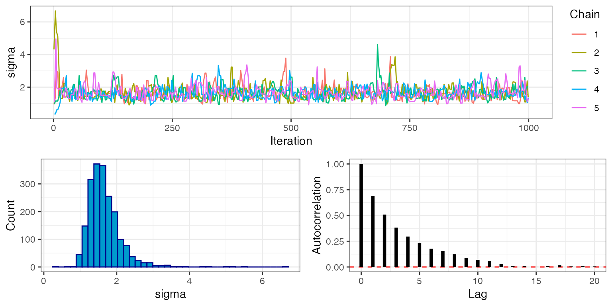

The likelihood and prior distributions that go into drjacoby can be specified by the user either as R functions or as C++ functions. This vignette demonstrates a basic MCMC implementation using both the R and C++ methods, and compares the two in terms of speed.
Setup
We need the following elements to run drjacoby:
- Some data
- Some parameters
- A likelihood function
- A prior function
Starting with the data, let’s assume that our observations consist of a series of draws from a normal distribution with a given mean (mu_true) and standard deviation (sigma_true). We can generate some random data to play with:
# set random seed
set.seed(1)
# define true parameter values
mu_true <- 3
sigma_true <- 2
# draw example data
data_list <- list(x = rnorm(10, mean = mu_true, sd = sigma_true))Notice that data needs to be defined as a named list. For our example MCMC we will assume that we know the correct distribution of the data (i.e. we know the data is normally distributed), and we know that the mean is no smaller than -10 and no larger than 10, but otherwise the parameters of the distribution are unknown. Parameters within drjacoby are defined in dataframe format, where we specify minimum and maximum values of all parameters. The function define_params() makes it slightly easier to define this dataframe, but standard methods for making dataframes are also fine:
# define parameters dataframe
df_params <- define_params(name = "mu", min = -10, max = 10,
name = "sigma", min = 0, max = Inf)
print(df_params)
#> name min max
#> 1 mu -10 10
#> 2 sigma 0 InfIn this example we have one parameter (mu) that occupies a finite range [-10, 10], and another parameter (sigma) that can take any positive value. drjacoby deals with different parameter ranges using reparameterisation, which all occurs internally meaning we don’t need to worry about these constraints affecting our inference.
Next, we need a likelihood function. This must have the following three input arguments, specified in this order:
-
params- a named vector of parameter values -
data- a named list of data -
misc- a named list of miscellaneous values
Finally, the function must return a single value for the likelihood in log space. These constraints on the format of the likelihood function might seem a bit restrictive, but they are needed in order for drjacoby to know how to use the function internally. The issue of taking logs is particularly important, as the MCMC will still run even if we forget to take logs, but the results produced will be nonsense!

Do not underestimate the importance of taking logs.
Inside the likelihood function we can extract individual parameter values from the input vector and then use these values to calculate the probability of the data. In our example, the likelihood function is quite simple thanks to the dnorm() function which can return the density of the normal distribution already in log space:
# define log-likelihood function
r_loglike <- function(params, data, misc) {
# extract parameter values
mu <- params["mu"]
sigma <- params["sigma"]
# calculate log-probability of data
ret <- sum(dnorm(data$x, mean = mu, sd = sigma, log = TRUE))
# return
return(ret)
}Notice that we don’t use the misc object at all here, which is perfectly fine. Finally, we need a prior function. This must have the params and misc arguments as above, and it must return a single value for the prior probability of those parameters in log space. Again, this strict format is required for drjacoby to know how to use the prior internally. In our case we will assume a uniform prior on mu, and a log-normal prior on sigma:
# define log-prior function
r_logprior <- function(params, misc) {
# extract parameter values
mu <- params["mu"]
sigma <- params["sigma"]
# calculate log-prior
ret <- dunif(mu, min = -10, max = 10, log = TRUE) +
dlnorm(sigma, meanlog = 0, sdlog = 1.0, log = TRUE)
# return
return(ret)
}Be careful to ensure that your prior is defined over the same range as specified in the df_params dataframe. For example, here our uniform prior for mu ranges from -10 to 10, and our log-normal prior for sigma ranges from 0 to infinity.
Running the MCMC
Once we have all the elements above it is straightforward to run a basic MCMC in drjacoby. We simply input the four elements, along with the number of burn-in and sampling iterations. By default drjacoby prints progress bars to the console to keep you updated on the progress of the MCMC. When running in R markdown we can use the option pb_markdown = TRUE to print progress bars in a markdown-friendly way, although you will probably want to leave this option turned off when running interactively (simply delete this argument).
# run MCMC
mcmc <- run_mcmc(data = data_list,
df_params = df_params,
loglike = r_loglike,
logprior = r_logprior,
burnin = 1e3,
samples = 1e3,
pb_markdown = TRUE)
#> MCMC chain 1
#> burn-in
#>
|
|======================================================================| 100%
#> acceptance rate: 22.5%
#> sampling phase
#>
|
|======================================================================| 100%
#> acceptance rate: 23.5%
#> chain completed in 0.177879 seconds
#> MCMC chain 2
#> burn-in
#>
|
|======================================================================| 100%
#> acceptance rate: 22.6%
#> sampling phase
#>
|
|======================================================================| 100%
#> acceptance rate: 23%
#> chain completed in 0.181429 seconds
#> MCMC chain 3
#> burn-in
#>
|
|======================================================================| 100%
#> acceptance rate: 23.9%
#> sampling phase
#>
|
|======================================================================| 100%
#> acceptance rate: 22.8%
#> chain completed in 0.188920 seconds
#> MCMC chain 4
#> burn-in
#>
|
|======================================================================| 100%
#> acceptance rate: 22.7%
#> sampling phase
#>
|
|======================================================================| 100%
#> acceptance rate: 23.2%
#> chain completed in 0.179429 seconds
#> MCMC chain 5
#> burn-in
#>
|
|======================================================================| 100%
#> acceptance rate: 22.9%
#> sampling phase
#>
|
|======================================================================| 100%
#> acceptance rate: 23.9%
#> chain completed in 0.159119 secondsThe output returned by the MCMC function has three parts: 1) an “output” dataframe containing raw posterior draws and other key elements at each iteration of the MCMC, 2) a “diagnostics” object containing useful summaries such as the effective sample size of each parameter, 3) a “parameters” object containing a record of the exact parameters used to run the MCMC. We can take a peek at the first of these outputs:
head(mcmc$output)
#> chain phase iteration mu sigma logprior loglikelihood
#> 1 1 burnin 1 8.694105 0.9516224 -3.866313 -183.58134
#> 2 1 burnin 2 8.638174 0.9516224 -3.866313 -180.24515
#> 3 1 burnin 3 8.638174 0.9516224 -3.866313 -180.24515
#> 4 1 burnin 4 8.638174 1.6319358 -4.524374 -72.42055
#> 5 1 burnin 5 8.638174 5.0682808 -6.854740 -31.46728
#> 6 1 burnin 6 2.601545 5.4440859 -7.044916 -26.57886Exploring outputs and checking MCMC performance
Before we can draw any conclusions from our MCMC results there are some basic checks that we should carry out. First, we can examine trace plots of all parameters to see how they are moving. This can be done using the plot_par() function, shown here for the burn-in phase:
plot_par(mcmc, show = "mu", phase = "burnin")
plot_par(mcmc, show = "sigma", phase = "burnin")
Notice that for all five chains both mu and sigma move quickly from their initial values to stable levels at around 3 and 2, respectively. This is a visual indication that the MCMC has burned in for an appropriate number of iterations. We can check this more rigorously by looking at the rhat object within the MCMC diagnostics, which gives the value of the Gelman-Rubin convergence diagnostic.
mcmc$diagnostics$rhat
#> mu sigma
#> 1.0061 1.0028Values close to 1 indicate that the MCMC has converged (typically the threshold <1.1 is used). This output uses the variance between chains, and therefore is only availble when running multiple chains.
By setting phase = "sampling" we can look at trace plots from the sampling phase only:
plot_par(mcmc, show = "mu", phase = "sampling")
plot_par(mcmc, show = "sigma", phase = "sampling")
Here we can see that the MCMC continues to move freely after the burn-in phase, and that all chains appear to be exploring the same part of the parameter space. The final plot shows the autocorrelation of the chains, which in this case falls off rapidly with samples being approximately independent at around 5 lags. This is an indication that the MCMC is mixing well. The marginal histogram shows a single clear peak, although this is still a bit rough so we may want to re-run the MCMC with a larger number of sampling iterations to get a smoother result. We can also explore this by looking at the effective sample size (ESS), which is stored within the MCMC diagnostics:
mcmc$diagnostics$ess
#> mu sigma
#> 746.3366 700.8900We can see that despite running the MCMC for 1000 sampling iterations, the actual number of effectively independent samples accounting for autocorrelation is much lower. When doing any calculation that relies on the number of samples, we should use the ESS rather than the raw number of sampling iterations. For example if we want to know the standard error of our estimate of mu we should do sd(mu)/sqrt(ESS). But just as importantly, when producing any summary of the posterior that does not make direct use of this number - for example when producing posterior histograms - we should use all posterior samples, and we should not thin samples to reduce autocorrelation. This is because a histogram produced from all samples is more accurate than one produce from thinned samples, even if the samples are autocorrelated.
The final question is how confident can we be that our MCMC has actually explored the space well? Although the trace plot above looks good, it is possible to get results that look like this from very pathological MCMC runs. This is a more complex problem that is dealt with in another vignette.
Using C++ functions
Although drjacoby is an R package, under the hood it is running C++ through the fantastic Rcpp package. When we pass an R likelihood function to run_mcmc(), as in the example above, the code is forced to jump out of C++ into R to evaluate the likelihood before jumping back into C++. This comes at a computational cost, which can be avoided by specifying functions directly within C++.
To use C++ a function within drjacoby we first write it out as stand-alone file. The example used here can be found inside the inst/extdata folder of the package, and reads as follows:
#include <Rcpp.h>
using namespace Rcpp;
// [[Rcpp::export]]
SEXP loglike(Rcpp::NumericVector params, Rcpp::List data, Rcpp::List misc) {
// extract parameters
double mu = params["mu"];
double sigma = params["sigma"];
// unpack data
std::vector<double> x = Rcpp::as< std::vector<double> >(data["x"]);
// sum log-likelihood over all data
double ret = 0.0;
for (unsigned int i = 0; i < x.size(); ++i) {
ret += R::dnorm(x[i], mu, sigma, true);
}
// return as SEXP
return Rcpp::wrap(ret);
}
// [[Rcpp::export]]
SEXP logprior(Rcpp::NumericVector params, Rcpp::List misc) {
// extract parameters
double sigma = params["sigma"];
// calculate logprior
double ret = -log(20.0) + R::dlnorm(sigma, 0.0, 1.0, true);
// return as SEXP
return Rcpp::wrap(ret);
}
// [[Rcpp::export]]
SEXP create_xptr(std::string function_name) {
typedef SEXP (*funcPtr_likelihood)(Rcpp::NumericVector params, Rcpp::List data, Rcpp::List misc);
typedef SEXP (*funcPtr_prior)(Rcpp::NumericVector params, Rcpp::List misc);
if (function_name == "loglike"){
return(Rcpp::XPtr<funcPtr_likelihood>(new funcPtr_likelihood(&loglike)));
}
if (function_name == "logprior"){
return(Rcpp::XPtr<funcPtr_prior>(new funcPtr_prior(&logprior)));
}
stop("cpp function %i not found", function_name);
}The logic of this function is identical to the R version above, just written in the language of c++. To allow drjacoby to talk to your c++ function(s) we need to have a linking function in this c++ file, in this case called create_xptr(). With this set up all we need to do is source our c++ file with Rccp::sourcecpp() then simply pass the function names as character strings to run_mcmc(). We define the prior in this file in the same way. To make life easy when setting up a new c++ model, you can create a template for your cpp file with the cpp_template() function - then all you need to do is fill in the internals of the loglikehood and logprior.
As before, there are some constraints on what this function must look like. It must take the same three input arguments described in the previous section, defined in the following formats:
-
paramsmust be anRcpp::NumericVector -
datamust be anRcpp::List -
miscmust be anRcpp::List
All parameter values will be coerced to double within the code, hence parameters consisting of integer or boolean values should be dealt with as though they are continuous (for example TRUE = 1.0, FALSE = 0.0). Second, the function must return an object of class SEXP. The easiest way to achieve this is to calculate the raw return value as a double, and to use the Rcpp::wrap() function to transform to SEXP. As before, the value returned should be the likelihood evaluated in log space.
Even though we are working in C++, we still have access to most of R’s nice distribution functions through the R:: namespace. For example, the dnorm() function can be accessed within C++ using R::dnorm(). A list of probability distributions available within Rcpp can be found here.
With these two functions in hand we can run the MCMC exactly the same as before, passing in the new functions:
# run MCMC
mcmc <- run_mcmc(data = data_list,
df_params = df_params,
loglike = "loglike",
logprior = "logprior",
burnin = 1e3,
samples = 1e3,
pb_markdown = TRUE)
#> MCMC chain 1
#> burn-in
#>
|
|======================================================================| 100%
#> acceptance rate: 22.9%
#> sampling phase
#>
|
|======================================================================| 100%
#> acceptance rate: 24.2%
#> chain completed in 0.011410 seconds
#> MCMC chain 2
#> burn-in
#>
|
|======================================================================| 100%
#> acceptance rate: 24%
#> sampling phase
#>
|
|======================================================================| 100%
#> acceptance rate: 22.1%
#> chain completed in 0.011749 seconds
#> MCMC chain 3
#> burn-in
#>
|
|======================================================================| 100%
#> acceptance rate: 22.9%
#> sampling phase
#>
|
|======================================================================| 100%
#> acceptance rate: 23%
#> chain completed in 0.012357 seconds
#> MCMC chain 4
#> burn-in
#>
|
|======================================================================| 100%
#> acceptance rate: 21.5%
#> sampling phase
#>
|
|======================================================================| 100%
#> acceptance rate: 24%
#> chain completed in 0.011623 seconds
#> MCMC chain 5
#> burn-in
#>
|
|======================================================================| 100%
#> acceptance rate: 22.7%
#> sampling phase
#>
|
|======================================================================| 100%
#> acceptance rate: 23.6%
#> chain completed in 0.017518 secondsYou should see that this MCMC runs considerably faster than the previous version that used R functions. There is a short delay initially while the strings are compiled into functions, but this only occurs the first time a function is compiled. On the other hand, writing C++ functions in this way is more error-prone and difficult to debug than simple R functions. Hence, if efficiency is your goal then C++ versions of both the likelihood and prior should be used, whereas if ease of programming is more important then R functions might be a better choice.
This was a very easy problem, and so required no fancy MCMC tricks. The next vignette demonstrates how drjacoby can be applied to a more challenging problem.